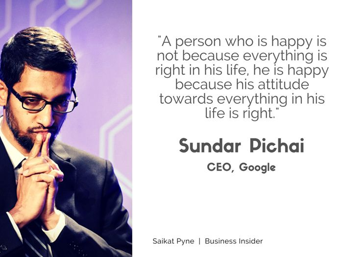
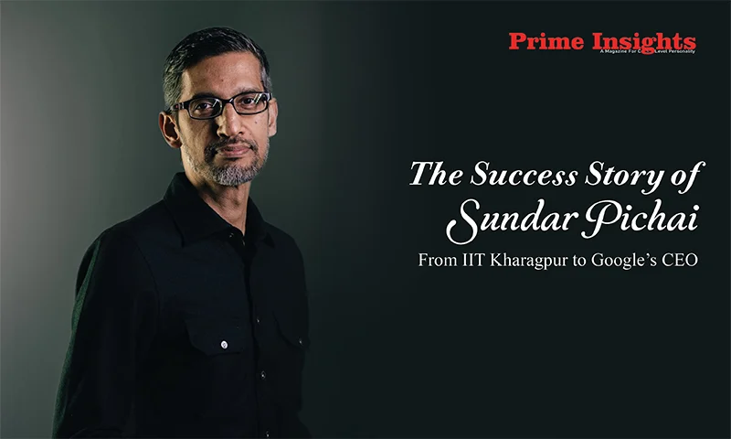

Introduction
Sundar Pichai, the CEO of Alphabet Inc. and its subsidiary Google, is a tech visionary whose leadership has reshaped the digital landscape. Born in Chennai, India, his journey from a humble background to the pinnacle of the tech industry is truly inspiring.
Innovation and Vision
What I admire most about Sundar Pichai is his relentless pursuit of innovation. Under his leadership, Google has introduced groundbreaking products and services, pushing the boundaries of what technology can achieve. His vision for the future is not just about technology but its positive impact on people's lives worldwide.
Leadership Style
Pichai's leadership style is marked by a rare combination of humility and decisiveness. He fosters a work culture that encourages creativity and collaboration, empowering teams to think big and take risks. His commitment to diversity and inclusion is evident in Google's initiatives to create a more inclusive tech industry.
Conclusion
Sundar Pichai's journey and accomplishments are a testament to the power of hard work, perseverance, and a forward-thinking mindset. As a tech enthusiast, I am inspired by his ability to navigate the complexities of the digital world while staying true to his values.